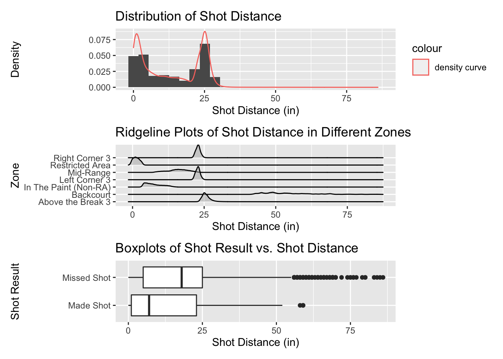
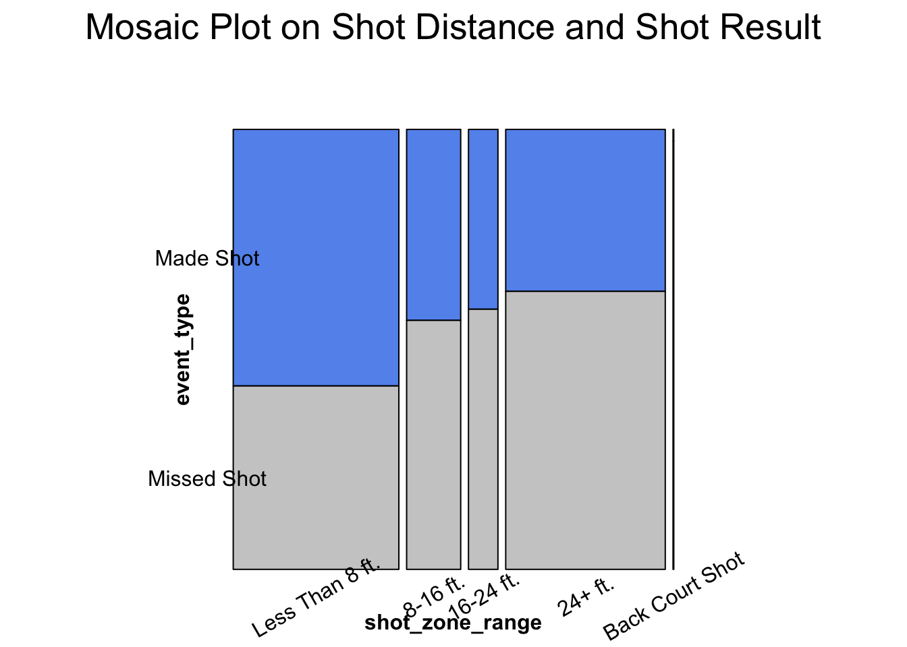
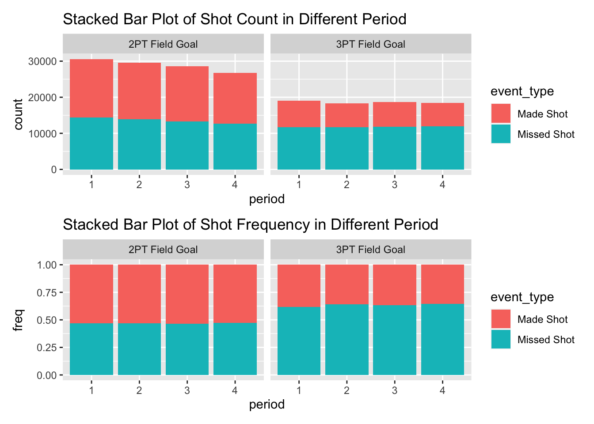
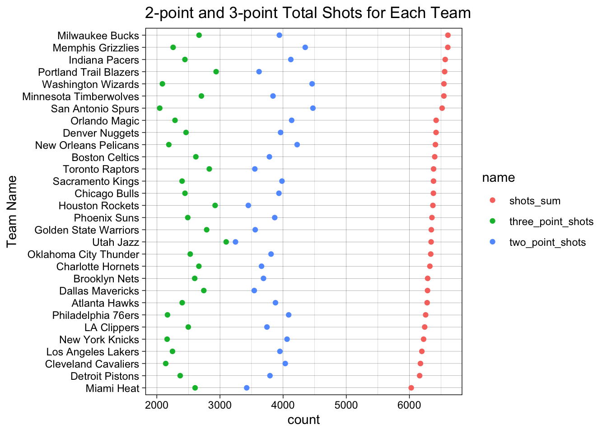
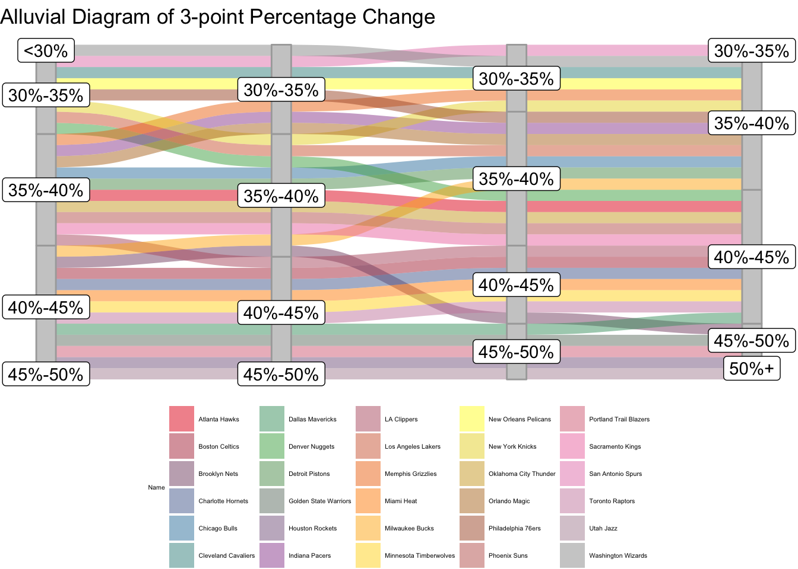
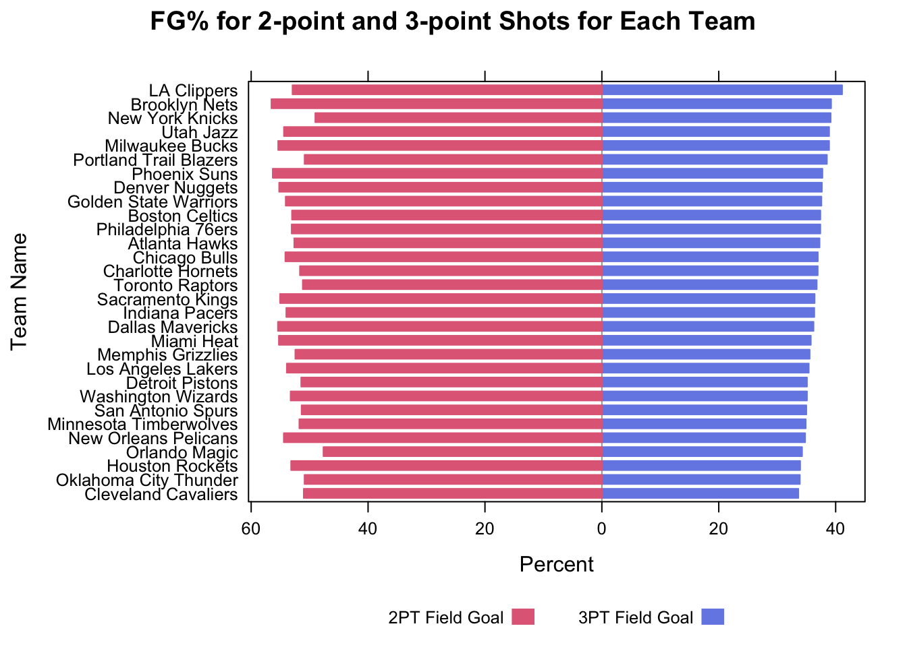
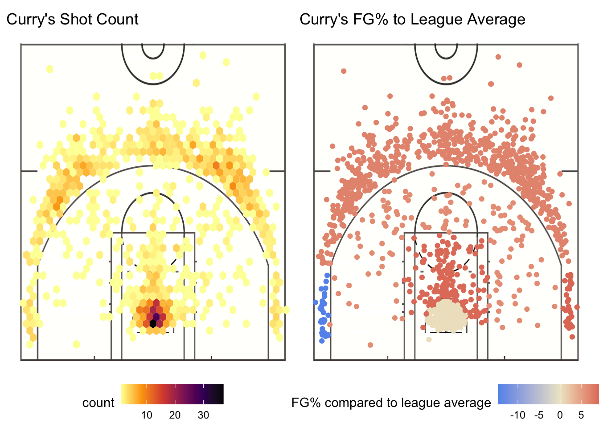
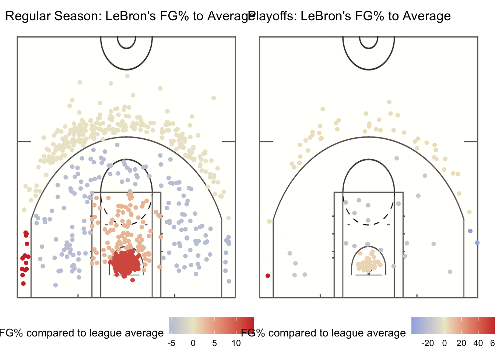
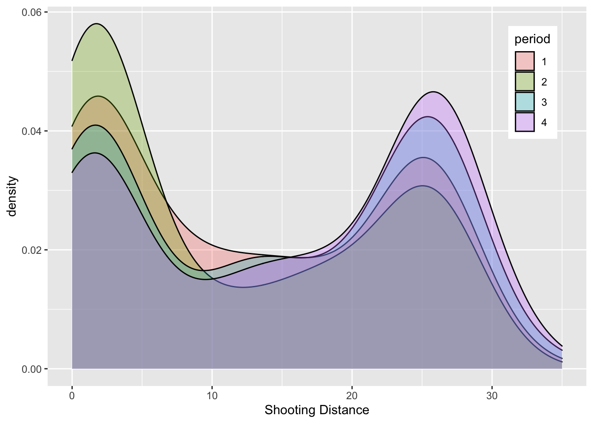

Chapter 5 Results
In this chapter, we will proceed to come up with the answers and our conclusions to each of the questions we proposed in the introduction section. Here are our questions proposed in the introduction chapter:
(On League Level) We will give an overall glance at the dataset for the entire league of last season to have a basic understanding of the shooting behaviors.
(On Team Level) Basketball is a team-played game and each team has its own style and culture. From the perspective of the team, we are going to look for some differences between shooting behaviors preferences and learn the relationship between the shooting patterns and period, field goal percentage, etc.
(On Player Level) Sometimes a single player could make a huge impact on games. We choose the three most popular players, Stephen Curry, Lebron James, and Giannis Antetokounmpo to investigate their shooting choices and look at how other variables could influence their shooting decision such as in different periods of the game.
5.1 League Shooting Pattern Analysis
5.1.1 Distribution of Shot Distance

From the first density histogram, we can see that the distribution of shot distance has two apparent peaks. Most shots are made around a distance of 0 inches and 25 inches. According to the Ridgeline Plots, we can conclude that the shots made around 0-inch distance are mainly in the restricted area, and the shots made around 25-inch distance are all kinds of 3-point shots. This graph shows that modern basketball tends to shoot less mid-range - either shooting close to the basket or making more 3-point shots - to try to maximize points per play.
Taking a look at the last boxplot with the distribution of shot distance according to shot result, it is obvious that missed shots have more outliers with larger distances. This situation makes sense because it is harder to make a long-distanced shot compared to a short-distanced one.
5.1.2 Relationship Between Shot Result and Shot Distance
Since in the previous part we realized that missed shots have more outliers with larger distance, we want to explore whether the shot distance will affect whether the shot is successfully made.

From the mosaic plot, we can see that as the shot distance increase, fewer shots are successfully made and more shots are missed. To further confirm our hypothesis that shot distance will affect the shot result, we perform chi-square tests to test for associations between the shot distance and shot result.
Null Hypothesis: Shot Distance and Shot Result are independent.
Alternative Hypothesis: Shot Distance and Shot Result are NOT independent.
| Test statistic | df | P value |
|---|---|---|
| 7675 | 4 | 0 * * * |
Since the p-value is less than 0.01, meaning the probability of us accepting the null hypothesis is less than 1%, so we can reject the null hypothesis that Shot Distance and Shot Result are independent. Therefore, it means that there is a relation between Shot Distance and Shot Result.
5.1.3 Shot Attempted in Different Periods
Every NBA game has four regular periods to decide which team is the winner (there would be overtime periods if the score is tied), so here we will ignore those overtime period and see generally how well all players shoot in different periods.

As shown in the second bar plots above, for both 2-point and 3-point shots, the field goal percentage stays similar for each period because the colored area of Made Shot and Missed Shot stays similar for all periods. For 2-point shots, the shot result approximately accounts for 50% of the area respectively, but for the 3-point field goals, Made Shot is less than it for 2-point shots, which make sense because making 3-point shots is more difficult than making 2-point shots as we discussed in the previous section that distance affects the shooting result. Also, we can see that for 2-point shots, the total shots decrease as the period increases. This is a normal phenomenon to us because players would be too exhausted to shoot near the hoop when the game approaches the end. Generally speaking, this overall situation for the entire league performance is as expected.
5.2 Team Shooting Pattern Analysis
At next step, we would go deeper onto the shooting performance on team level.
5.2.1 Total Shots for Each Team
Although in the previous section, we realized that there is no striking difference in total number and FG% for 2-point and 3-point shots in each period for the entire league, we somewhat expect this shooting pattern to differ team by team. Firstly, to get a general understanding of how many 2-point and 3-point shots each team attempted for season 2020-21, we create a Cleveland Dot Plot as follows:

From the Cleveland Dot Plot, we can see that the total shots made by each team for the entire season don’t vary a lot, ranging from around 6000 to 6500. However, different teams have different preferences for 2-point shots and 3-point shots. For example, Utah Jazz has almost the same counts for 2-point shots and 3-point shots with the most 3-point shots in the league. On the contrary, San Antonio Spurs has the least count of 3-point shots and the most count of 2-point shots in the league. Therefore, we can conclude that teams vary significantly in their choice for making 2-point or 3-point shots.
5.2.2 Three-point Preference by Period
After generally seeing the preference of different teams, now we can explore the movement of preference for 2-point shots and 3-point shots period by period. To see the preference change, here we calculate the percentage of 3-point shots among all shots made in each period for each team (\(\text{percentage} = \frac{\text{3-point shots attempted}}{\text{all shots attempted}}\)). If the percentage increase, it means that the team prefers to make more 3-point shots.

(Here Each color represents one team. The percentage represent the percentage of 3-point shots of the total number of shots attempted each period. The first axis means 1st period, and so on.)
From the graph, we can see that, indeed, most of the teams will have different preferences for 2-point and 3-point shots regarding different periods of a game. For example, Brooklyn Nets experienced the largest change in the percentage of 3-point shots among other teams: at 1st period, it has a percentage between 40% and 35%, and during the 2nd period, the percentage decreased to 35% - 40%. Then during the 3rd period, the percentage increased to 40%-45% and finally reached 45%-50% at the 4th period.
A general trend is that, as the game approaches 4th period, teams tend to make more 3-point shots compared to their performance in 1st period.
5.2.3 Field Goal Percentage
After getting a general understanding of types and shots attempted for each team, now we want to focus on the Field Goal Percentage (\(\frac{\text{ total shots made}}{\text{total shots attempted}}\)).
Here we will use a diverging bar chart to compare the Field Goal % for 2-point and 3-point shots for each team, ordering by Field Goal % for 3-point shots: 
From the plot, we can see that, generally, 3-point Field Goal is less than 2-point Field Goal, which makes sense because 3-point shots are harder to score regarding the distance.
It is difficult to see if the FG% for 2-point or 3-point corresponds to the team’s preference. Based on our previous conclusion, Utah Jazz has the most number of 3-point shots attempted, and San Antonio Spurs were concluded as the team least preferring 3-point shots. However, the FG% for 3-point shots are not the highest for Utah Jazz and not the lowest for San Antonio Spurs. This situation may be affected by the fact that, since the team prefers 3-point shots, they make more, and they miss more, so the FG% will not be the highest. Therefore, teams with more than three attempts can try to put more effort into the three-point practice so that the scores could be maximized.
5.3 Individual Player Analysis
After analyzing the performance of teams, we would like to get deeper into an individual player. Since there are over 300 players in the league, we are not able to analyze each player one by one, so it is necessary to focus on the most brilliant stars.
5.3.1 Shooting Behavior of Stephen Curry
Since in Part 5.1.1 we discovered that the league now generally prefers making either 2-point shots near hoop or 3-point shots with fewer mid-range shots, here we firstly explore the shooting behavior of Stephen Curry. As a ground-breaking player, Stephen Curry showed the world how explosive his scoring ability was and he is making an NBA record of three-pointers made while this project is getting done. Analyzing his shooting behavior would be a great angle to start.

These two plots use a graph of a basketball court to visualize the performance of Stephen Curry at each point on the court and it divides the court into multiple zones. The color in the left graph indicates the total number of shots made by Stephen Curry, the color in the right graph indicates the field goal percentage of Stephen Curry in that specific zone compared to the average level of the league. It is red if the player shoots above the league average and blue if lower than the league average.
In the plot above, we could first notice that Stephen Curry tries most of his shots in the paint (a rectangle area nearest to the basket) and out of a three-point line. Again, this shooting behavior is a classical example of modern basketball: try less on the mid-range shot and more 2-point shots near the hoop and 3-point shots. Another characteristic of his shooting is the range of his threes. We could even see multiple points scattered a long distance from the three-point line, which makes it harder to guard him.
On the other hand, we could still see that Stephen has his weakness, which is the left corner. His left-corner threes are deep blue so it would be a great strategy to limit him to shoot at that place. However, we think he can develop because he shoots very well on the other corner.
5.3.2 Shooting Pattern in Playoffs of LeBron James
We could always say that games of the regular season do not matter because being a championship depends on the performance in playoffs. So many top players choose to take as much rest as they can in the regular season so that they could save more energy for the playoffs. Therefore, it would be great if we can find some differences in shooting behavior in the regular season and playoffs. As a die-hard Lakers fan, I would choose to analyze LeBron James.

By looking at the regular season shot chart on the left, it is obvious that LeBron did fantastic in the paint, which shows that his advantage near the basketball still exists. On contrary, he also tried a lot of mid-range shots and threes but the results were not ideal, except that his shooting percentage on the left corner is extremely high, where Stephen Curry was not good at.
Comparing the performance in the regular season and playoffs, we could see that although LeBron James still did better than average in the semi-circle area under the basket, his shooting significantly declined in that area. It might be the reason why the Lakers in this season did not make it to the finals. Moreover, he still behaved well on the left corner in the playoffs than the other one so the defense strategy against LeBron should be opposite to Stephen Curry.
5.3.3 Analysis on shooting behavior in different periods of LeBron James
Every basketball game has four periods and athletes would get exhausted when the game is getting to the end, so it is important to arrange the rest and the rush hour properly. As we previously discovered in Part 5.1.3, the number of 2-point and 3-point shots are similar at the general league level. However, it may differ on the individual player level. Therefore, let us take a look at the shooting behavior of LeBron James in different periods and hope to find some special patterns in it.

Based on the plot, LeBron James prefers attacking the rim to shoot long-distance in the second quarter, and among four periods it is the last one that he attempted most threes. Therefore, there is one more defending policy against LeBron that should be focusing more on his layups in the first half and his threes in the second half.
5.3.4 Shooting Behavior of Giannis Antetokounmpo
Giannis Antetokounmpo, AKA Greek Freak, was experiencing his best seasons in the past two years. MVP winner, All-star, and last but not least, NBA championship. His athleticism is so phenomenal that he could win all even without good shooting ability. While in the shock by shooting ability of Stephen Curry, let us take a look at Giannis Antetokounmpo, another side of basketball.

Based on this alluvial diagram, we could see that Giannis Antetokounmpo in this season spent most of his attempts on 2 pointers and two-thirds of his shots happened less than 8 feet away from the basket. As a right-handed player, it seems like that he does not have a preference on which side to shoot. Moreover, after comparing the shot attempted at the left side center and right side center, we could find that he approached the rim more often from the left although he is right-handed. This might be inspirational to his defenders that it is better to focus on his left hand. At last, in his fewer long-distance attempts, he did not do very well because we could see more blue flow in the long-distance area. Therefore, he still has a lot of potentials to stimulate and more accomplishments are waiting for him if he could work on his weakness.